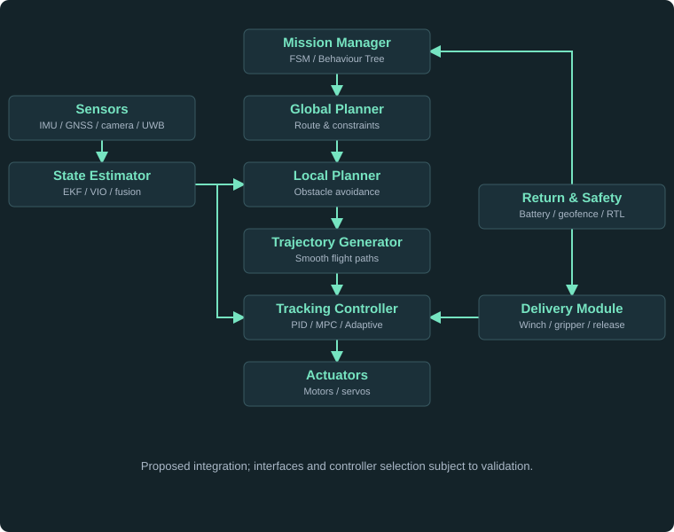

RESEARCH & DEVELOPMENT / ENGINEERING RESEARCH PROJECT
Autonomous Delivery Drone
Research proposal for a reproducible A→B→A aerial delivery mission integrating payload-aware flight control, precision delivery and safe return-to-base.
Research status
Literature review, proposed methodology and physical prototype assembly. Calibration is underway; completed flight experiments and validated performance are not claimed.
Physical prototype and calibration

The prototype has been assembled for planned testing. Current research includes quadcopter modeling, PID control, attitude estimation and ArduPilot integration. Flight performance and autonomous delivery remain to be validated.
Research overview
The proposed system should depart from base A, navigate to delivery location B, perform controlled elevation adjustment and package delivery, then return safely to A. The research addresses the interaction between payload variation, vertical control, sensing, obstacle proximity and contingency handling.
Research gap and objectives
- Integrate mission logic, sensing, control, navigation, delivery and return into one reproducible framework.
- Compare baseline control with payload-aware descent control for altitude tracking and swing suppression.
- Evaluate precision delivery sensing and return policies under battery, GNSS and communication faults.
PROPOSED SYSTEM ARCHITECTURE
Layered autonomy and flight control

Candidate approaches include PX4 with a companion computer and ROS 2, EKF or visual-inertial estimation, waypoint and local obstacle-aware planning, and baseline PID compared with model-predictive or adaptive control. Delivery mechanism and specific algorithms remain research design choices.
Proposed methodology
01 / Simulation
Validate A→B→A mission logic using software-in-the-loop simulation.
02 / Control comparison
Compare baseline and payload-aware descent control in repeatable scenarios.
03 / Precision delivery
Evaluate fused sensing near a prepared delivery zone.
04 / Controlled field evaluation
Plan supervised testing with geofencing, safety pilot and return-to-base contingencies.
Evaluation metrics
- Mission completion, delivery success, safe return, mission time and abort count.
- Position, altitude and heading error; repeatability at delivery.
- Payload swing, settling time, overshoot and release disturbances.
- Minimum clearance, failsafe activation, geofence violations, energy use and planner latency.
Research documentation
Original uploaded research and proposal documents, converted to PDF. Literature references and experimental claims remain subject to academic verification.